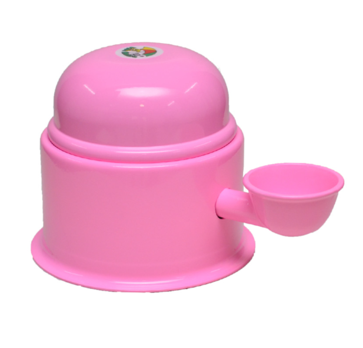
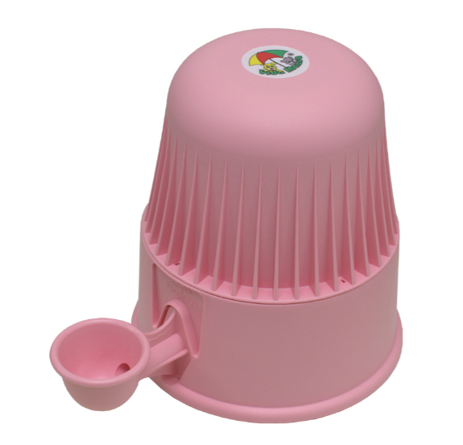
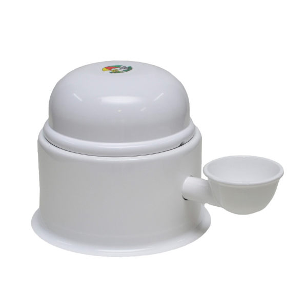
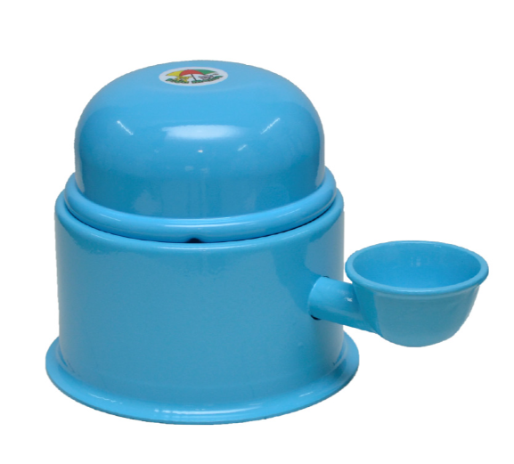
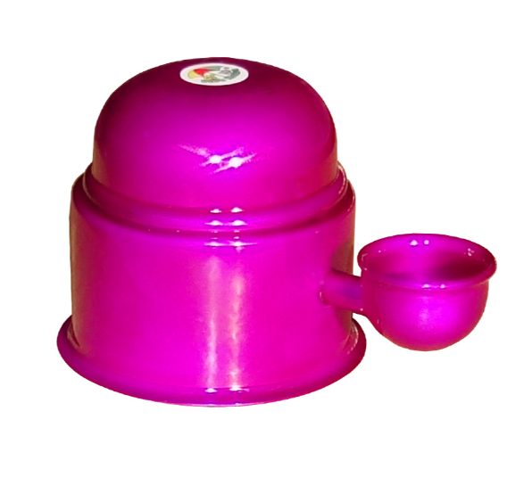
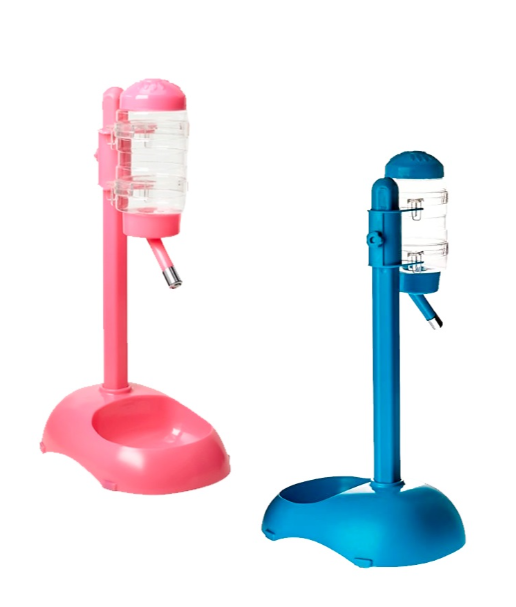
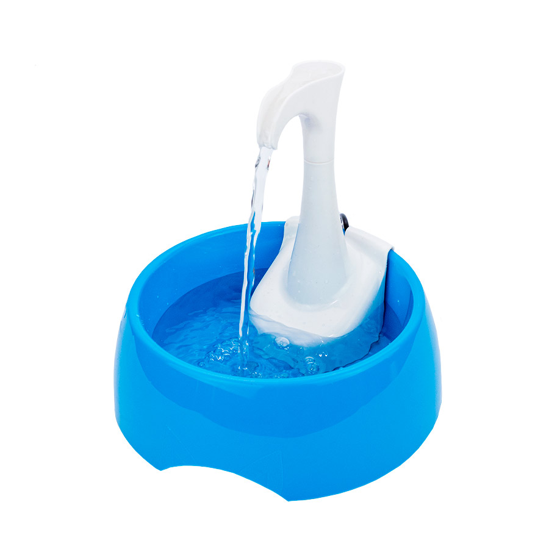
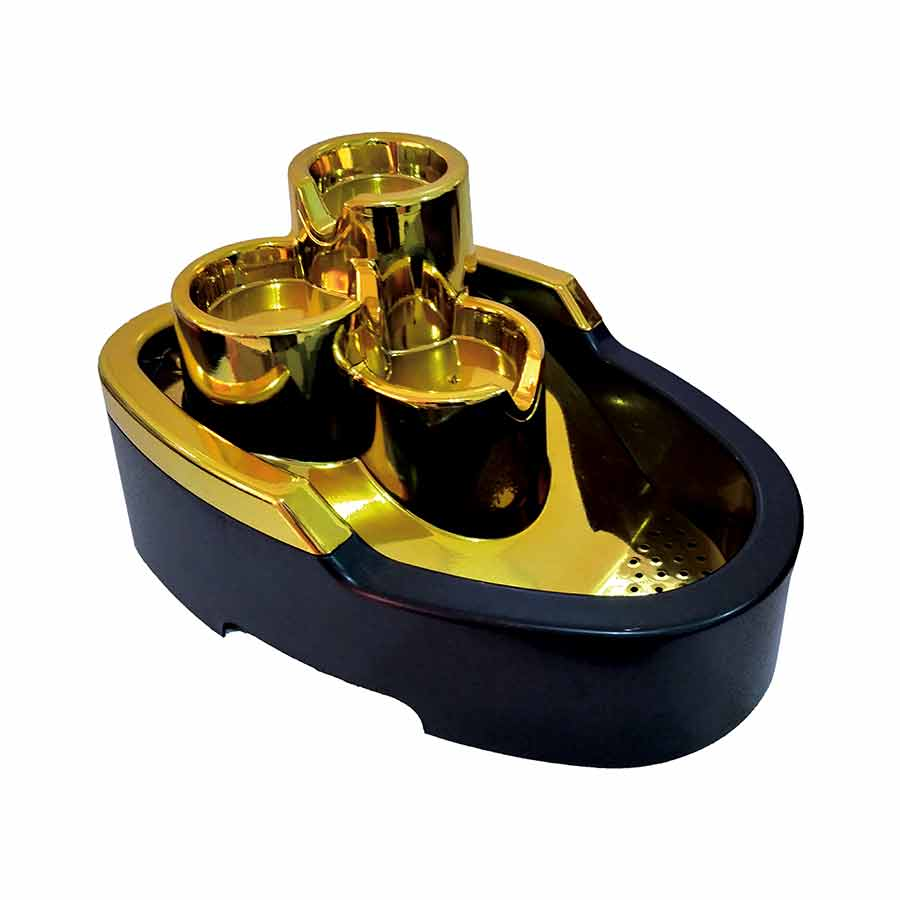

*imagens meramente ilustrativas
Bebedouro Vida Mansa Alumínio para Cães e Gatos Rosa
Em estoque
16% OFF
R$ 149,99
R$ 179,99
R$ 149,99 para assinantes
Bebedouros em Destaque

Bebedouro Vida Mansa Polipropileno para Cães e Gatos Rosa 2L
R$ 99,90

Bebedouro Vida Mansa Alumínio para Cães e Gatos Branco
R$ 149,99

Bebedouro Vida Mansa Alumínio para Cães e Gatos Azul Bebê
R$ 149,99

Bebedouro Vida Mansa Alumínio para Cães e Gatos Violeta
R$ 179,99

Bebedouro Bilha e Comedouro Chalesco para Cães e Gatos - Cores Sortidas
R$ 96,21

Bebedouro Vida Mansa Alumínio para Cães e Gatos Vermelho
R$ 179,99

Fonte Amicus Bebedouro Aqua First Azul para Cães e Gatos
R$ 68,70

Fonte DuraPets Bivolt Gold para Cães e Gatos 2,5L